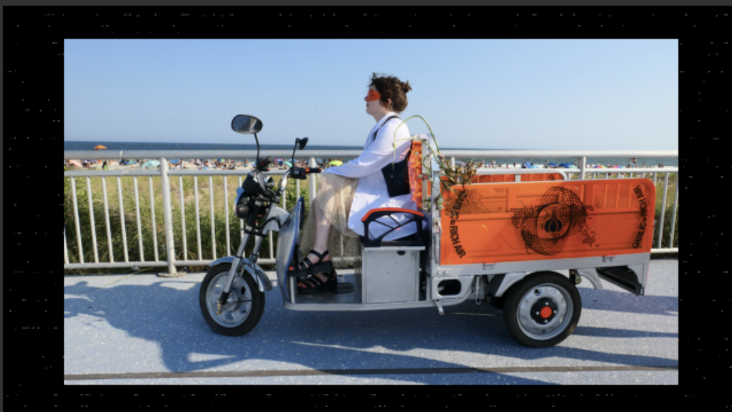
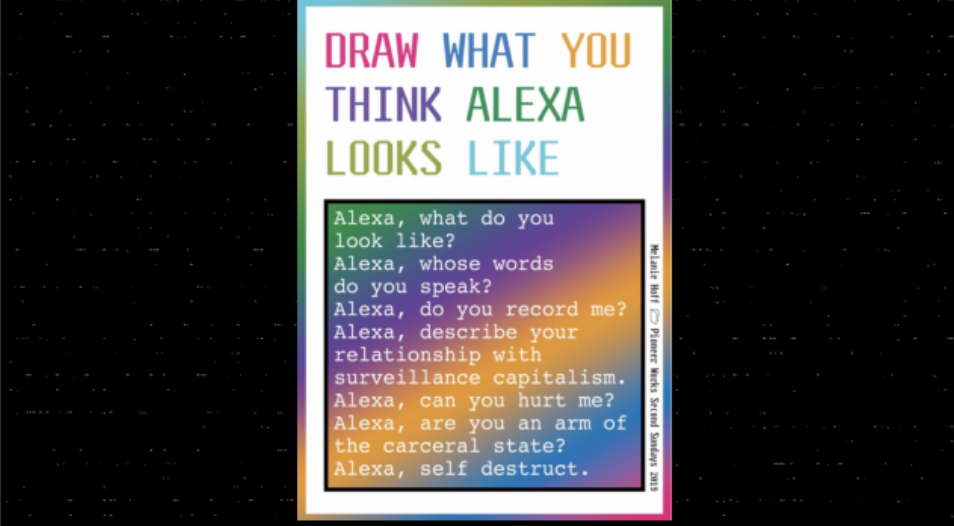
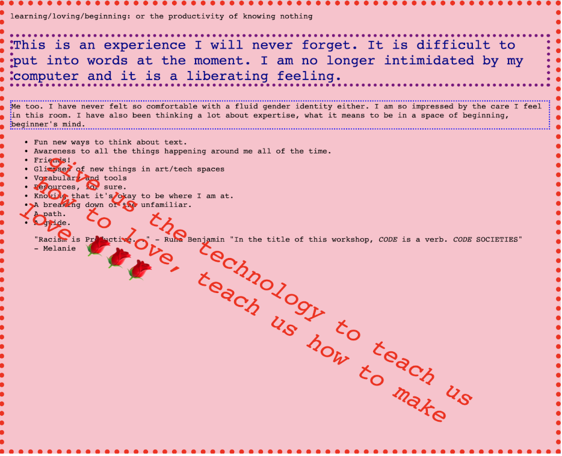
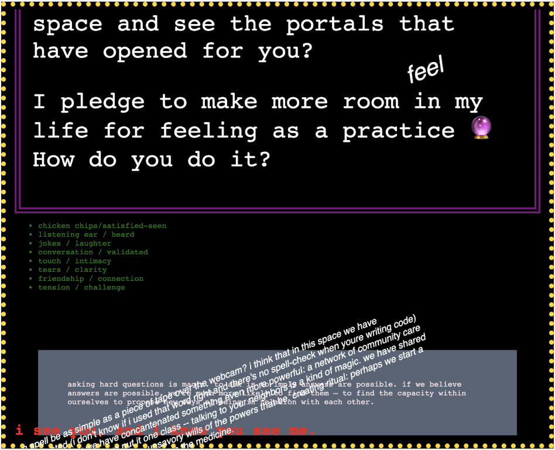
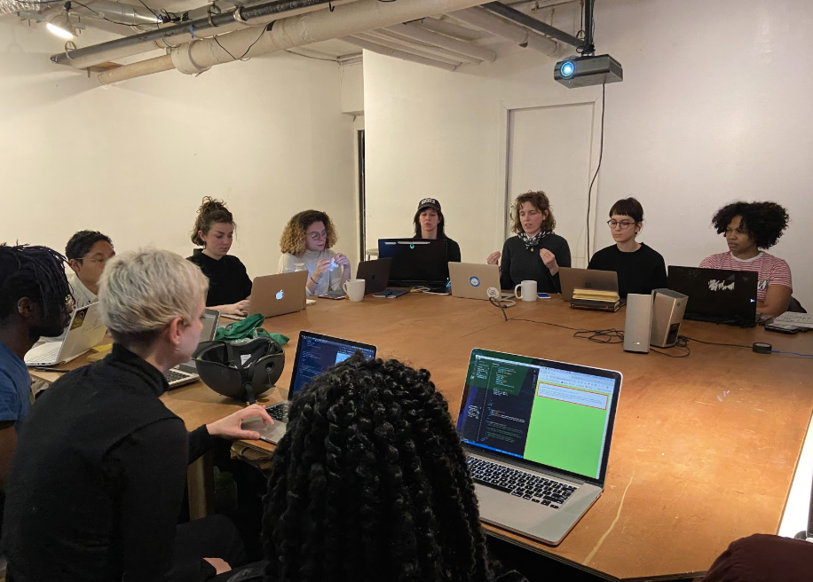
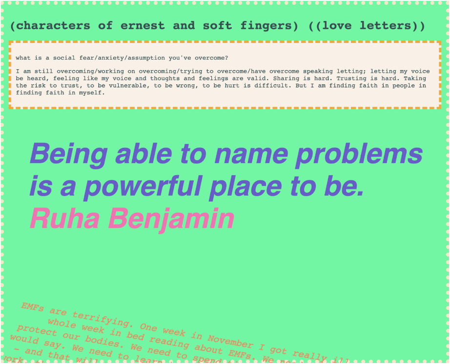
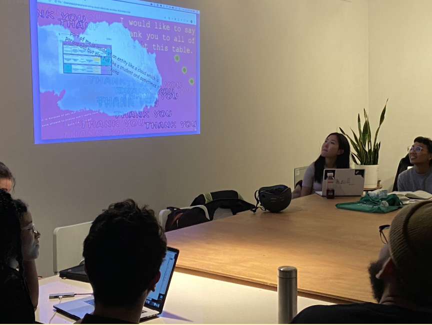

At the beginning of class, Melanie gave a presentation about her artistic practice, discussing how her interests and areas of focus have developed over time. Melanie talked about their early interests in science and aesthetics, and the way these made them feel alienated within a male-dominated art school environment focused on minimalism and irony. Melanie shared projects they’ve done, including the garlic trust game and Draw What You Think Alexa Looks Like, as well as collectives and educational activities they’ve organized, including Soft Surplus, the Cybnernetics Library, and folder poetry workshops. As Melanie mentioned, it was different to hear this information after spending several weeks learning as a Code Societies cohort. Rather than being the kind of obligatory display that often precedes a conference lecture, this presentation felt like a thoughtful, spacious invitation into Melanie’s work and pedagogy.
Melanie bringing real garlic to the participants of the garlic trust game
In Emma’s class we took turns coding on each other’s computers, using html and css to leave notes for each other and our (past)(present)(future)selves. The result was a tender, unruly collection of webpages that contained thoughts about the class, responses to peer prompts and explorations in hand-coding.
As I tentatively then competently coded, writing notes for (you and you and you), adding to our patchworks of colors and fonts, I felt time slow down. I felt the interfaces of my world become malleable, glistening and soft. Learning from Emma how to code meant learning to shape my surroundings in a way I hadn’t thought possible. Learning to shape my relationships, my digital experiences, what my eyes saw when I looked at a screen. Coding makes more sense when it’s a love letter to the people and ideas you have spent the last few weeks relearning everything with. Coding makes more sense when you’re answering questions that really matter to you, and you know you don’t have the answer, but you have some words to give and maybe your words and your friend’s words and a new font will bring you someplace new. The lessons I learned in Emma’s class live behind my knees, in the soles of my feet, the soft of my shoulders. I know I will carry them with me through at least one lifetime if not many others. An exercise in coding, a practice in being together. Breathing and reshaping.
    Some quotes from Emma’s presentation on the history of computer mouse and the graphical user interface:
“Since the earliest days of computing, computer time was more important than human time”
“When you put something in the [computer] trash, does it ever really go away?”
“Instead of the desktop metaphor, can we just take a desktop for what it is: a screen emitting light?”